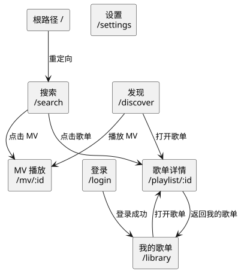

| 术语 | 定义 |
|---|---|
| 歌曲（Song） | 可被搜索、加入播放队列并播放的曲目。展示字段与内部模型见 CORE §4.1 的 Song。 |
| 歌手（Singer） | 歌曲的表演者，一首歌可有多位。界面以“ / ”连接展示。 |
| 专辑（Album） | 歌曲所属专辑；用于列表展示、播放条信息与封面地址推导。 |
| 歌单（Playlist） | 一组歌曲的集合。分为当前账号的“我的歌单”与公开歌单详情。 |
| 播放队列（Queue） | 排在当前播放歌曲之后、按播放顺序等待播放的歌曲序列；当前歌曲不属于队列。播放开始时队列为空，当前歌曲单独显示；歌单完整加载后按当前歌曲位置自动补齐。“下一首播放”是手动加入队列的唯一入口。 |
| 单曲播放（Single play） | 在歌曲列表中点击非当前曲目行携带的播放按钮；以该曲目为当前歌曲并替换播放队列，效果与双击该行相同。当前曲目的按钮用于暂停 / 继续。 |
| 下一首播放（Play next） | 把对应歌曲插入播放队列头；当前歌曲与队列其余顺序不变。歌曲已在队列中时移动到队列头；歌曲是当前歌曲时不操作；无当前歌曲时直接开始播放该歌曲。队列只支持头部插入，不提供队尾插入；这是手动加入队列的唯一入口。 |
| 播放模式（PlayMode） | sequence 顺序播放 · repeat-all 列表循环 · repeat-one 单曲循环 · shuffle 随机播放。 |
| 音质（Quality） | 128k 标准 · 320k 高品质 · flac 无损。设置项 auto 不是音质档位，而是按登录态取默认档。 |
| 请求音质 / 实际音质 | 请求音质是用户或设置选择的档位；实际音质是上游最终返回链接对应的档位，可能更低，也可能因仅高音质源而更高。播放条同时展示两者。 |
| 登录态（AuthStatus） | 渲染进程可见的登录状态；字段定义见 CORE §4.1 的 AuthStatus。渲染进程只持有登录态，不持有凭证。 |
| 登录凭证（Credential） | 用户登录后由上游签发的访问凭据；数据模型与字段见 PROVIDER §1 与 §4.3。保存与使用边界见 §2。 |
| 权限（PayInfo） | 歌曲对当前账号的可播属性：免费、VIP 或数字专辑；字段见 CORE §4.1 的 PayInfo。仅用于界面角标，实际可播性以播放链接结果为准。 |
| 歌词（Lyric） | LRC 原文与可选的翻译文本；支持逐字歌词时按逐字时间轴高亮，界面按时间戳合并翻译。 |
| 我喜欢（收藏歌单） | 当前账号固定的收藏歌单，不依赖列表位置；详情页统一显示名称“我喜欢”。 |
| 不可播标记 / 最高可用音质 | 歌单中每首歌的可用性标记：不可播，或当前账号可用的最高音质档位；未知状态按可播处理。 |
| 渐进加载（Progressive loading） | 歌单先显示第一页，后续歌曲自动补齐；加载期间队列可以为空，当前歌曲单独显示。 |
| 播放缓存 | 已播放音频在本机保存的副本，用于再次播放时减少下载；按账号隔离，可清空。 |
| 每日推荐 / 专属雷达 / 猜你喜欢 | “发现”页的三类推荐内容；按账号与日期展示，可手动刷新。 |
| 逐字歌词 | 按字 / 词时间轴高亮的歌词；没有逐字数据时回退为整行高亮。 |
| 收藏 / 歌单管理 / 可编辑歌单 | 收藏歌曲与对当前账号可编辑歌单执行创建、改名、删除、增删歌曲；公开歌单只读。 |
| MV / MV 清晰度 | 可搜索、播放并选择清晰度的音乐视频；MV 播放与音频播放状态相互独立。 |
| 下载任务 / 下载中心 | 下载当前账号可播歌曲到本机的任务，以及管理进度、暂停 / 继续、删除的侧栏抽屉。 |
| 全局快捷键 | 应用在后台时仍可触发的键盘快捷键，用于播放控制或显示窗口。 |
| 播放引擎 / gapless / EQ / 响度归一 | 实际输出音频的引擎；可选 HTML5 Audio 或系统 mpv，后者支持无缝播放、均衡器与响度归一。 |
| 评论（Comment） | 当前歌曲在上游的评论列表；字段见 CORE §4.1 的 Comment。界面展示评论总数、昵称、正文与点赞数。 |
| MPRIS | 桌面环境的媒体控制规范；本应用通过 D-Bus 暴露的协议见 PROVIDER §4.4。 |
| 约定 | 内容 |
|---|---|
| 默认音质 | Settings.defaultQuality 为 auto 时：已登录取 flac，未登录取 320k；设置页可固定 128k / 320k / flac。 |
| 音质回退 | 请求档位无权限或无链接时静默回退，不弹提示，实际音质显示在播放条；实际音质可能高于或低于请求档位；全部档位无链接时提示不可播。回退规则见 PROVIDER §2。 |
| 播放模式切换 | 按 sequence → repeat-all → repeat-one → shuffle 循环切换，并通过 Toast 显示当前模式。 |
| 歌单加载与后台刷新 | 再次进入已打开歌单时先显示上次内容；第一页成功即显示；刷新失败保留已显示内容并提示；只后台准备“我喜欢”第一页；退出登录清空本机歌单数据。 |
| 启动参数文件 | 默认路径为 $XDG_CONFIG_HOME/lychee-player/flags.conf（未设置时 ~/.config/lychee-player/flags.conf）；每行一个参数，空行与 # 开头行忽略；命令行 > 文件 > 内置默认；保存后下次启动生效。 |
| 不可播标记与最高可用音质 | 歌单加载后逐步显示每首歌的不可播标记与最高可用音质；标记出现不阻塞列表；未知状态按可播处理。 |
| 渐进加载 | 第一页成功即显示；后续页自动补齐；歌单完整加载后，播放队列按当前歌曲位置自动补齐；已知不可播歌曲不入队。 |
| 播放缓存 | 按账号隔离；有容量上限、可手动清空；退出登录不清空；缓存内容仅本机播放；不做下一首预解析。 |
| 播放失败 | 不可播（无可用流）时播放条沿队列向后尝试到可播或队列空；其他加载失败仍停止当前加载并提示错误，不自动跳下一首、不自动回退上一首。顺序播放到队尾时停止。 |
| 乐观更新与回滚 | 收藏、歌单编辑等写操作先更新界面；失败时回滚并提示。 |
| 下载限制 | 仅下载当前账号可播内容；失败不自动无限重试；下载文件仅供本机个人使用。 |
| 登录凭证边界 | 凭证只存在于主进程；渲染进程只消费登录态。系统密钥环不可用时禁用登录，绝不退化为明文保存。 |
| 主题 | 通过 <html data-theme="dark|light"> 切换，选择持久化在 Settings.theme；组件只使用语义变量，不直接写死颜色。 |
| 关闭行为 | Settings.closeToTray 默认开启：关闭主窗口时隐藏到托盘；仅在托盘菜单选择“退出”时结束进程。 |
| 页面 / URL 跳转 | 页面与跳转关系见 §3.4；Hash 路由，切换路由自动关闭歌词 / 评论面板。 |



/ 重定向到 /search。/library；登录成功后进入 /library。/discover，MV 播放页为 /mv/:id；下载中心为侧栏抽屉，不占独立路由。| 接口 | 归属 |
|---|---|
| 面向依赖软件的 API | 除 MPRIS 外，本应用不暴露其他 API。 |
| MPRIS 媒体控制协议 | PROVIDER §4.4 |
| 命令接收后的内部处理 | CORE §5.6 |
界面只使用下表 token 派生的语义变量。深色与浅色按语义角色对应，token 名不要求相同；所有语义变量必须从当前主题的调色盘取色，不得跨主题取色，也不得使用调色盘外的字面量。主题通过
<html data-theme="dark|light"> 切换，选择持久化在 Settings.theme。
| 预览 | Token | HEX | 语义 |
|---|---|---|---|
bg | #231F1F | 主背景、窗口边框、选中底 | |
surface | #3E3542 | 次级浮层：通知底、弹窗、输入框底 | |
fg | #D6CAB6 | 正文文字、slider 轨道 | |
muted | #B0B4BC | 中性边框、图标、次要文字 | |
purple | #89338E | accent：hover / 选中填充；亮底上的文字 | |
purple-light | #E593E7 | accent 提亮：深浮层上的文字、hover 高亮 | |
gold | #9D7E4D | accent：细线、进度填充、副标题弱文字 | |
cream | #FFF7E4 | 最亮色：亮面背景、选中 / hover 文字、装饰亮线 | |
red | #CC2A47 | 警告 / 危险：错误填充、危险操作 |
| 预览 | Token | HEX | 语义 |
|---|---|---|---|
bg | #F7F7F7 | 主背景（Alabaster background） | |
surface | #F2F0EF | 次级浮层：弹窗、输入框底（微暖 off-white） | |
fg | #000000 | 正文文字（Alabaster foreground） | |
muted | #55585C | 次要文字、边框（冷灰，呼应 dark mode） | |
purple | #8A2E8F | accent 主紫；亮底上的文字、按钮填充 | |
purple-light | #D998D9 | 柔和填充：hover / 选中底，需配深色文字 | |
gold | #5C4824 | accent 金：细线、进度填充、副标题文字 | |
highlight | #E9DBF2 | 选中态高亮底（对应 dark 的 cream 角色） | |
red | #AB3248 | 错误 / 危险（樱桃红，与 dark 同族） |
| 语义变量 | Dark token | Light token | 说明 |
|---|---|---|---|
--bg | bg | bg | 主背景 |
--panel | surface | surface | 次级浮层 |
--text | fg | fg | 正文文字 |
--muted / --note | muted | muted | 次要文字 |
--accent | purple | purple | 主 accent |
--accent-strong | purple-light | purple | 强调文字 / 填充 |
--accent-soft | purple | purple-light | accent 软填充（由 token 派生） |
--accent-line | purple | purple | accent 边线（由 token 派生） |
--gold | gold | gold | 金色 accent |
--danger | red | red | 错误 / 危险 |
--on-accent | cream | highlight | accent 上的文字 / 前景 |
purple 在深底上仅适合填充，文字强调用 purple-light；light 的 purple-light 是粉彩填充，压深色文字；light 的 --on-accent 取 highlight，不要直接写白色。以下尺寸均为 CSS 像素。样式规定以文字与代码为准；原型只作示意，不要求与数值完全一致。颜色取自 §5.1。
| 项目 | 契约 |
|---|---|
| 默认窗口 | 1280×820；最小 280×440；无系统菜单栏。 |
| 主网格 | 两列：侧栏 + 内容区；底部播放条通栏；内容区独立滚动，播放条常驻贴底。 |
| 侧栏宽度 | 224px；≤900px 为 64px 图标栏；≤560px 为 56px。 |
| 内容区 | 最大宽度 1240px，居中；页面内边距 28/34/40px（上/左右/下）。 |
| 播放条高度 | 92px；≤900px 为 84px；≤560px 为 116px 双行。 |
| 歌词 / 评论面板 | 覆盖侧栏与播放条以外的主区域；左右两列各占 50%，左歌词、右评论；与播放队列面板互斥。 |
| 播放队列面板 | 右侧固定浮层，宽 390px，底部让出播放条高度；≤560px 全宽；与歌词 / 评论面板互斥，同时只打开一个。 |
| 登录组件占位 | 高度 332px；宽度 100%，最大宽度 800px（暂定，按实现调整）；≤560px 保持 100%；主进程 WebContentsView 按该矩形定位。 |
| 响应式断点 | 900px：侧栏收窄、设置页单列、歌曲列表隐藏专辑列、音量改为弹出式；560px：播放条双行、歌词 / 评论仍各占 50%、音质 / 主题选项单列。 |
WebContentsView 按占位矩形定位（login.setEmbedBounds），登录页本身不承载远程内容。| 页面 | 结构 |
|---|---|
| 搜索 | 页头（标题）+ 搜索框 + 四类标签（单曲 / 歌手 / 专辑 / 歌单）+ 热门关键词 chips + 结果区（歌曲表、歌手 / 专辑 / 歌单卡片、MV 卡片）+ 分页；MV 卡片可进入 MV 播放页。 |
| 我的歌单 | 登录后：账号资料带 + 歌单卡片网格；未登录：空状态 + “去登录”。卡片显示封面、名称与歌曲数。 |
| 歌单详情 | 歌单头图（封面 180px、名称、歌曲数 / 歌单 ID / 已载入数、播放全部）+ 歌曲表；再次进入先显示上次内容，第一页渲染后底部显示加载 / 重试与已载入 / 总数；加载失败显示重试与返回我的歌单；队列为空，当前歌曲在播放条单独显示。 |
| 发现 | “每日推荐 / 专属雷达 / 猜你喜欢”三个分区；卡片可播放全部或打开歌单；未登录显示登录引导；支持手动刷新。 |
| MV 播放 | 视频播放器 + 标题 / 歌手 / 清晰度选择；支持全屏与退出恢复；取流失败复用 NO_STREAM / AUTH_EXPIRED 提示。 |
| 下载中心 | 右侧抽屉；展示任务进度、失败原因、存储占用，提供打开目录、暂停 / 继续 / 删除；不新增路由。 |
| Toast | 固定于右下、播放条上方；3.6 秒自动消失；info 左侧 accent 边，error 左侧 danger 边。 |
| ErrorCode | 界面提示 | 行为 |
|---|---|---|
UPSTREAM_NETWORK | 网络异常，请稍后重试 | 保留当前状态，允许用户重试。 |
AUTH_EXPIRED | 登录已失效，请重新登录 | 提示用户前往登录页；不自动清除凭证。 |
NO_STREAM | VIP 账号：“当前内容已下架”；其余情况：“当前内容不可播放（可能需要 VIP 或已下架）” | 播放条沿队列向后尝试到可播或队列空；队列为空时停止。 |
UPSTREAM_CHANGED | 上游接口发生变化 | 提示稍后再试；保留当前状态。 |
QUOTA_LIMITED | 请求过于频繁，请稍后重试 | 提示稍后再试；用户可手动重试。 |
NO_PERMISSION | 当前账号无权执行该操作 | 保留原状态；不可编辑的歌单不显示编辑入口。 |
INTERNAL | 主进程内部错误 | 提示主进程内部错误，详情只写入主进程日志。 |
NO_STREAM 的文案按当前账号 VIP 状态选择；VIP 检测失败时回退到通用提示。“不可播”只影响当前曲的播放尝试，不改变已有队列。| 菜单项 | 行为 |
|---|---|
| 显示主窗口 | 恢复并聚焦主窗口；单击托盘图标同样触发。 |
| 播放 / 暂停 | 向渲染进程发送 toggle 命令。 |
| 上一首 / 下一首 | 向渲染进程发送 previous / next 命令。 |
| 退出 Lychee Player | 结束应用进程，不受“关闭到托盘”影响。 |